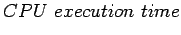
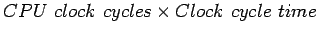
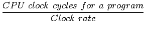

ผู้ใช้งานคอมพิวเตอร์ และผู้ออกแบบคอมพิวเตอร์ พิจารณาตัววัดประสิทธิภาพในหลายด้าน หลายลักษณะ ในเบื้องต้น การวัดประสิทธิภาพทำโดยการวัดจากเวลาที่ใช้ในการประมวลผลของโปรเซสเซอร์ (CPU Time) โดยมีสมการพื้นฐานของ CPU Time ดังนี้
|  |  | (4.10) | |
| (4.11) |
หรือสามารถแสดงในรูปของอัตราสัญญาณนาฬิกาจะได้
|  | (4.12) | ||
| (4.13) |
จากสมการข้างบนจะเป็นได้ว่า ประสิทธิภาพของคอมพิวเตอร์สามารถเพิ่มได้โดยการเพิ่มอัตราสัญญาณนาฬิกาหรือทำงานที่ความเร็วสัญญาณนาฬิกาเร็วขึ้น หรือทำการลดจำนวนสัญญาณนาฬิกาในการทำงานของโปรแกรม อย่างไรก็ตามมีหลายเทคนิคที่สามารถลดจำนวนสัญญานนาฬิกาในการทำงานของโปรแกรม จะเพิ่ม Clock cycle time มากขึ้น